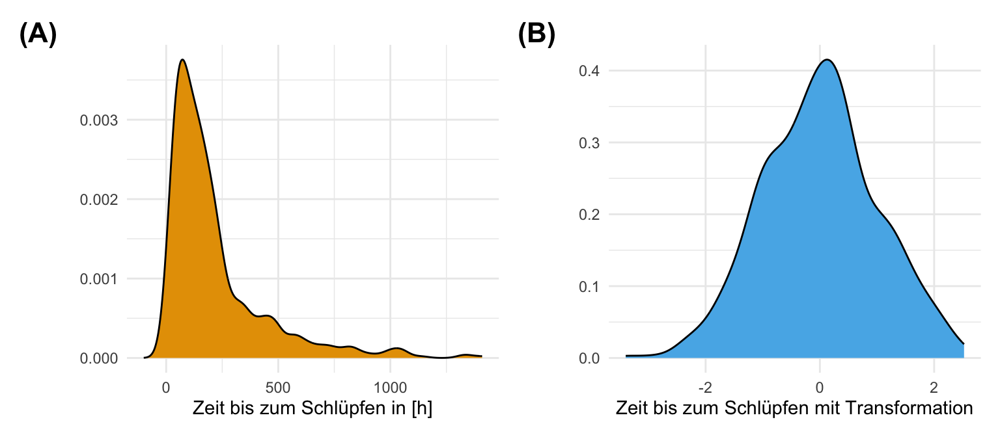

pacman::p_load(tidyverse, magrittr, scales, see, MASS, bestNormalize,
conflicted)
conflict_prefer("select", "dplyr")
conflict_prefer("filter", "dplyr")
conflict_prefer("extract", "magrittr")
conflicts_prefer(MASS::boxcox)
cbbPalette <- c("#000000", "#E69F00", "#56B4E9", "#009E73",
"#F0E442", "#0072B2", "#D55E00", "#CC79A7")18 Transformieren von Daten
Letzte Änderung am 17. January 2024 um 10:44:02
“It’s morphin’ time! I never get tired of that! Now, go, go Power Rangers!” — Power Rangers morphing phrase
Warum müssen wir Daten transformieren? Meistens hat dies drei Hauptgründe.
- Wir wollen eine ANOVA oder eine Gaussian lineare Regression rechen und benötigen ein normalverteiltes Outcome \(y\).
- Wir wollen einen Algorithmus zur Prädiktion (deu. Vorhersage) nutzen und haben sehr viele Einflussvariablen \(x\) in sehr unterschiedlichen Einheiten.
- Wir wollen eine komplexere Analyse wie die Hauptkomponentenanalyse oder Clusteranalyse rechnen und brauchen Variablen, die alle eine ähnliche Spannweite haben.
Im ersten Fall wollen wir meist unsere Daten \(log\)-Transformieren um aus einem nicht-normalverteilten Outcome \(y\) ein \(log\)-normalverteiltes \(y\) zu erschaffen. Im zweiten Fall wollen wir unsere Daten Standardisieren oder Normalisieren. Wir brauchen normalisierte Daten später beim Klassifizieren im Rahmen von maschinellen Lernverfahren. Bitte beachte auch, dass die Transformationen hier eher für kleine Datensätze geeignet sind. Im Kapitel zur Klassifikation gehe ich nochmal auf die Automatisierung über mehrere Variablen ein. Wenn du also einen großen Datensatz hast, den du vielleicht oft bearbeiten musst, dann mag dir dort mehr geholfen sein.
Wir wollen uns nun die Verfahren zur Transformation von Daten in den folgenden Abschnitten einmal näher anschauen.
Tutorien für das Transaformieren von Daten
Ich verweise hier auch nochmal auf das tolle Tutorium von Matus Seci auf dem Coding Club - Transforming and scaling data: Understand the fundamental concepts of manipulating data distributions for modelling and visualization. Du findest auch dort mehr Informationen zu der Rücktransformation und der Anwendung von Transformationen auf einen komplexeren Datensatz.
18.1 Genutzte R Pakete
Wir wollen folgende R Pakete in diesem Kapitel nutzen.
Im Folgenden ist das R Paket {dlookr} aus dem Code entfernt, da du das Paket extra installieren musst. Das führt bei mir zu Schluckauf im Code, so dass ich die Funktionen jetzt nur noch erwähne.
Installation von
{dlookr}
Aktuell ist das R Paket {dlookr} nur über GitHub zu installieren. Dafür einmal das R Paket {devtools} installieren und dann folgenden Code ausführen.
devtools::install_github("choonghyunryu/dlookr")Am Ende des Kapitels findest du nochmal den gesamten R Code in einem Rutsch zum selber durchführen oder aber kopieren.
18.2 Daten
Wir wollen uns in diesem Kapitel mit der normalverteilten Variable jump_length gemessen in [cm] und der nicht-normalverteilten Variable hatch_time gemessen in [h] aus dem Datensatz flea_dog_cat_length_weight.csv" beschäftigen. Wir wählen über die Funktion select() nur die beiden Spalten aus dem Datensatz, die wir benötigen.
data_tbl <- read_csv2("data/flea_dog_cat_length_weight.csv") %>%
select(jump_length, hatch_time)In der Tabelle 18.1 ist der Datensatz data_tbl nochmal dargestellt. Wir zeigen hier nur die ersten sieben zeilen des Datensatzes.
| jump_length | hatch_time |
|---|---|
| 15.79 | 483.60 |
| 18.33 | 82.56 |
| 17.58 | 296.73 |
| 14.09 | 140.90 |
| 18.22 | 162.20 |
| 13.49 | 167.47 |
| 16.28 | 291.20 |
Im Folgenden nutzen wir oft die Funktion mutate(). Schau dir im Zweifel nochmal im Kapitel zu Programmierung die Funktion mutate() an.
18.3 \(log\)-Transformation
Wir nutzen die \(log\)-Transformation, wenn wir aus einem nicht-normalverteiltem Outcome \(y\) ein approxomativ normalverteiltes Outcome \(y\) machen wollen. Dabei ist wichtig, dass wir natürlich auch die Einheit mit \(log\)-transformieren.
Im Folgenden sehen wir die \(log\)-Transformation der Variable hatch_time mit der Funktion log(). Wir erschaffen eine neue Spalte im tibble damit wir die beiden Variable vor und nach der \(log\)-Transformation miteinander vergleichen können.
Das R Paket {dlookr} hat eine große Auswahl an implementierten Funktionen für \(y\)-Transformationen.
log_tbl <- data_tbl %>%
mutate(log_hatch_time = log(hatch_time))Wir können dann über ein Histogramm die beiden Verteilungen anschauen. In Abbildung 18.1 (a) sehen wir die nicht transformierte, rohe Daten. Es gibt einen klaren Peak Schlüpfzeiten am Anfang. Dann läuft die Verteilung langsam aus. Wir können nicht annehmen, dass die Schlüpfzeiten normalverteilt sind. Abbildung 18.1 (b) zeigt die \(log\)-transmutierten Daten. In diesem Fall sehen wir normalverteilte Daten. Wir haben also ein \(log\) normalverteiltes Outcome \(y\) mit dem wir jetzt weiterechnen können.


In der Abbildung Abbildung 18.2 siehst du nochmal die Anwendung der \(\log\)-Skala in ggplot auf die Daten. Aber Achtung, die ursprünglichen Daten sind nicht transformiert. Du schaust dir hier nur an, wie die Daten transformiert aussehen würden. Es gibt auch hierzu ein kleines Tutorium zu ggplot log scale transformation. Da kannst du dann auch einmal nachschauen, wie die \(\log_2\)-Skala in ggplot funktioniert.
ggplot(log_tbl, aes(hatch_time)) +
geom_histogram(fill = cbbPalette[2], color = "black") +
theme_minimal() +
labs(x = expression("Zeit bis zum Schlüpfen in" ~ log[10](h)), y = "Anzahl") +
## here starts the log scale
scale_x_log10(breaks = trans_breaks("log10", function(x) 10^x),
labels = trans_format("log10", math_format(10^.x))) +
annotation_logticks(sides = "b")- 1
-
Hier wird die \(x\)-Achse einmal auf die \(\log\)-Skala gestellt und die
breaksentsprechend angepasst. - 2
- Wir ergänzen noch die richtige Schreibweise.
- 3
-
Die Ticks werden auch richtig gezeichnet. Du kannst mit
lauch auf der \(y\)-Achse \(\log\)-Ticks anzeigen lassen.

ggplot dargestellt. Achtung, hier ist nur die Darstellung transformiert. Die ursprünglichen Daten bleiben von der Transformation in ggplot unberührt.18.4 Quadratwurzel-Transformationen
Die Quadratwurzel-Transformationen ist eine etwas seltenere Transformation. Meist wird die Quadratwurzel-Transformationen als die schwächere \(log\)-Transformation bezeichnet. Wir sehen in Abbildung 18.3 (b) den Grund dafür. Aber zuerst müssen wir aber über die Funktion sqrt() unsere Daten transformieren. Wir können auch die Funktion transform() aus dem R Paket {dlookr} verwenden und haben eine große Auswahl an möglichen Transformationen. Einfach mal die Hilfeseite von transform() aufrufen und nachschauen.
sqrt_tbl <- data_tbl %>%
mutate(sqrt_hatch_time = sqrt(hatch_time))In Abbildung 18.3 (a) sehen wir die nicht transformierte, rohe Daten. Es gibt einen klaren Peak Schlüpfzeiten am Anfang. Dann läuft die Verteilung langsam nach rechts aus. Wir können nicht annehmen, dass die Schlüpfzeiten normalverteilt sind. Abbildung 18.3 (b) zeigt die Wurzel-transmutierten Daten. Unser Ziel besser normalverteilte Daten vorliegen zu haben, haben wir aber mit der Quadratwurzel-Transformationen nicht erreicht. Die Daten sind immer noch rechtsschief. Wir würden also die \(log\)-Transformation bevorzugen.


18.5 Box-Cox Transformation
Die Box-Cox-Transformation ist ein statistisches Verfahren zur Umwandlung von nicht normalverteilten Daten in eine Normalverteilung. Die Transformation ist nicht so einfach wie die logarithmische Transformation oder die Quadratwurzeltransformation und erfordert etwas mehr Erklärung. Beginnen wir zunächst die Gleichung zu verstehen, die die Transformation beschreibt. Die grundsätzliche Idee ist, dass wir unser \(y\) als Outcome mit einem \(\lambda\)-Exponenten transformieren. Die Frage ist jetzt, welches \(\lambda\) produziert die besten normalverteilten Daten? Wenn wir ein \(\lambda\) von Null finden sollten, dann rechnen wir einfach eine \(\log\)-Transformation. Die Idee ist also recht simpel.
\[ y(\lambda)=\left\{\begin{matrix} \dfrac{y^{\lambda}-1} {\lambda} & \quad \mathrm{f\ddot ur\;\;}\lambda \ne 0 \\[10pt] \log(y) &\quad \mathrm{f\ddot ur\;\;}\lambda = 0\end{matrix}\right. \]
Wir werden natürlich jetzt nicht händisch alle möglichen \(\lambda\) durchprobieren bis wir das beste \(\lambda\) gefunden haben. Dafür gibt es die Funktion boxcox aus dem R Paket {MASS}, die ein lineares Modell benötigt. Daher bauen wir usn erst unser lineares Modell und dann stecken wir das Modell in die Funktion boxcox().
jump_mod <- lm(jump_length ~ 1, data = data_tbl)Jetzt einmal die Funktion boxcox() ausführen und danach das \(\lambda\) extrahieren. Hier ist es etwas umständlicher, da das \(\lambda\) in der Ausgabe der Funktion etwas vergraben ist. Dafür ist das R Paket {MASS} einfach nicht mehr das jüngste Paket und hat keine so guten Funktionen zum Erhalten von wichtigen Parametern. Ich möchte die Abbildung nicht haben, daher die Option plotit = FALSE.
bc_obj <- boxcox(jump_mod, plotit = FALSE)
lambda <- bc_obj$x[which.max(bc_obj$y)]
lambda[1] 0.9Wir erhalten also ein \(\lambda\) von 0.9 wieder. Dieses \(\lambda\) können wir dann nutzen um unsere Daten nach Box-Cox zu transformieren. Dafür übersetzen wir dann die obige Matheformel einmal in R Code.
data_tbl <- data_tbl %>%
mutate(jump_boxcox = ((jump_length ^ lambda - 1)/lambda))In der Abbildung 18.4 sehen wir dann einmal das Ergebnis der Transformation. Sieht gar nicht mal so schlecht aus und noch besser als die reine \(\log\)-Transformation. Wie immer musst du aber auch hier rumprobieren, was dann am besten einer Normalverteilung folgt.
ggplot(data = data_tbl) +
theme_minimal() +
geom_histogram(aes(x = jump_boxcox), alpha = 0.9,
fill = cbbPalette[3], color = "black") +
labs(x = 'Box-Cox transformierte Sprungweiten', y = 'Anzahl')
ggplot dargestellt.18.6 Standardisierung
Die Standardisierung wird auch \(z\)-Transformation genannt. In dem Fall der Standardisierung schieben wir die Daten auf den Ursprung, in dem wir von jedem Datenpunkt \(y_i\) den Mittelwert \(\bar{y}\) abziehen. Dann setzen wir noch die Standardabweichung auf Eins in dem wir durch die Standardabweichung \(y_s\) teilen. Unser standardisiertes \(y\) ist nun standardnormalverteilt mit \(\mathcal{N(0,1)}\). Wir nutzen für die Standardisierung folgende Formel.
\[ y_z = \cfrac{y_i - \bar{y}}{s_y} \]
In R können wir für die Standardisierung die Funktion scale() verwenden. Wir müssen auch nichts weiter in den Optionen von scale() angeben. Die Standardwerte der Funktion sind so eingestellt, dass eine Standardnormalverteilung berechnet wird. Wir können auch die Funktion transform() aus dem R Paket {dlookr} verwenden. Die Option wäre dann zscore.
scale_tbl <- data_tbl %>%
mutate(scale_jump_length = scale(jump_length))In Abbildung 18.5 (a) sehen wir nochmal die nicht transformierten, rohen Daten. Wir haben in diesem Beispiel die normalvertielte Variable jump_length gewählt. Der Mittelwert von jump_length ist 20.51 und die Standardabweichung ist 3.77. Ziehen wir nun von jedem Wert von jump_length den Mittelwert mit 19.3 ab, so haben wir einen neuen Schwerpunkt bei Null. Teilen wir dann jede Zahl durch 3.36 so haben wir eine reduzierte Spannweite der Verteilung. Es ergibt sich die Abbildung 18.5 (b) als Standardnormalverteilung. Die Zahlen der auf der x-Achse haben jetzt aber keine Bedeutung mehr. Wie können die Sprungweite auf der \(z\)-Skala nicht mehr biologisch interpretieren.


18.7 Normalisierung
Abschließend wollen wir uns nochmal die Normalisierung anschauen. In diesem Fall wollen wir die Daten so transformieren, dass die Daten nur noch in der Spannweite 0 bis 1 vorkommen. Egal wie die Einheiten vorher waren, alle Variablen haben jetzt nur noch eine Ausprägung von 0 bis 1. Das ist besonders wichtig wenn wir viele Variablen haben und anhand der Variablen eine Vorhersage machen wollen. Uns interessieren die Werte in den Variablen an sich nicht, sondern wir wollen ein Outcome vorhersagen. Wir brauchen die Normalisierung später für das maschinelle Lernen und die Klassifikation. Die Formel für die Normalisierung lautet wie folgt.
\[ y_n = \cfrac{y_i - \min(y)}{\max(y) - \min(y)} \]
In R gibt es die Normalisierungsfunktion nicht direkt. Wir könnten hier ein extra Paket laden, aber bei so einer simplen Formel können wir auch gleich die Berechnung in der Funktion mutate() machen. Wir müssen nur etwas mit den Klammern aufpassen. Wir können auch die Funktion transform() aus dem R Paket {dlookr} mit der Option minmax verwenden.
norm_tbl <- data_tbl %>%
mutate(norm_jump_length = (jump_length - min(jump_length))/(max(jump_length) - min(jump_length)))In Abbildung 18.6 (a) sehen wir nochmal die nicht transformierten, rohen Daten. In Abbildung 18.6 (b) sehen wir die normalisierten Daten. Hier fällt dann auf, dass die normalisierten Sprungweiten nur noch Werte zwischen Null und Eins annehmen. Die Zahlen der auf der x-Achse haben jetzt aber keine Bedeutung mehr. Wie können die normalisierten Sprungweiten nicht mehr biologisch interpretieren.


18.8 Automatische Auswahl mit {bestNormalize}
Dann sind wir bis hierher gekommen und fragen uns nun welche ist den jetzt die beste Transformation für unsere Daten um einigermaßen eine Normalverteilung hinzubekommen? Da hilft uns jetzt das R Paket {bestNormalize}. Die Kurzanleitung zum Paket erlaubt es automatisiert auf einem Datenvektor die beste Transformation zu finden um die Daten in eine Normalverteilung zu verwandeln. Wie immer geht noch mehr, aber wir machen hier einmal den schnellen Durchlauf. Wir bauen uns dazu einmal einen Datenvektor x mit 1000 Beobachtungen, die einer Gamma-Verteilung folgen.
x <- rgamma(1000, 1, 1)Jetzt fragst du dich, wie sieht so eine Gamma-Verteilung aus? Zuerst natürlich nicht wie eine Normalverteilung. Ich habe dir in der Abbildung 18.7 einmal das Histogramm der x-Werte dargestellt. Wir haben also eine sehr schiefe Verteilung vorliegen.

Jetzt können wir die Funktion bestNormalize() nutzen um uns die beste Transformationsmethode wiedergeben zu lassen. Das ist super praktisch in der Anwendung. Wir können uns theoretisch noch verschiedene Gütekriterien aussuchen aber für hier reicht die Standardimplementierung. Wichtig ist noch, dass wir hier eine Kreuzvalidierung durchführen, so dass die Ergebnisse und die Auswahl des Algorithmus robust sein sollte.
bn_obj <- bestNormalize(x)
bn_objBest Normalizing transformation with 1000 Observations
Estimated Normality Statistics (Pearson P / df, lower => more normal):
- arcsinh(x): 3.4248
- Box-Cox: 1.0245
- Center+scale: 7.121
- Double Reversed Log_b(x+a): 8.7784
- Exp(x): 56.2736
- Log_b(x+a): 1.831
- orderNorm (ORQ): 1.1883
- sqrt(x + a): 1.5237
- Yeo-Johnson: 1.5149
Estimation method: Out-of-sample via CV with 10 folds and 5 repeats
Based off these, bestNormalize chose:
Standardized Box Cox Transformation with 1000 nonmissing obs.:
Estimated statistics:
- lambda = 0.2538993
- mean (before standardization) = -0.391335
- sd (before standardization) = 1.061612 Laut dem Algorithmus sollen wir eine Box Cox Transformation durchführen. Okay, wie machen wir das jetzt? Wir hätten zwar die Parameter in der Ausgabe angegeben und die könnten wir dann auch in einer Veröffentlichung angeben, aber wenn es schneller gehen soll, dann können wir die Funktion predict() nutzen, die uns die transformierten x Werte wiedergibt.
x_trans <- predict(bn_obj)Dann nochmal schnell gucken, ob das auch mit der Rücktransformation klappen würde.
x_trans_back <- predict(bn_obj, newdata = x_trans, inverse = TRUE)Einmal dann der Vergleich ob alle x_trans_back Werte den ursprünglichen x Werten entsprechen. Ja, das sieht gut aus.
all.equal(x_trans_back, x)[1] TRUEUnd zum Abschluss nochmal eine Abbildung der transformierten x Werte. In der Abbildung 18.8 siehst du dann einmal das entsprechende Histogramm. Das sieht doch sehr gut aus und wir mussten nicht zig verschiedene Algorithmen selber testen.

x Werte mit der Box-Cos Transformation aus dem R Paket {bestNormalize}.